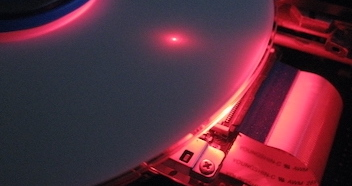
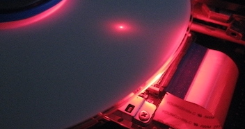

Accueil

Sur ces pages vous trouverez :
- Ma veille mensuelle,
- Mon bloc-notes,
- Des réalisations numériques,
- Mes publications,
- Une courte biographie,
- Mes lectures.
Bonnes lectures et découvertes.
Merci à @Leuleu pour le tutorat.


No matching items

Sur ces pages vous trouverez :
Bonnes lectures et découvertes.
Merci à @Leuleu pour le tutorat.